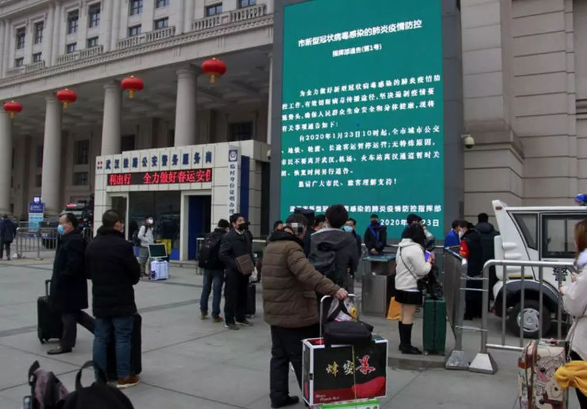
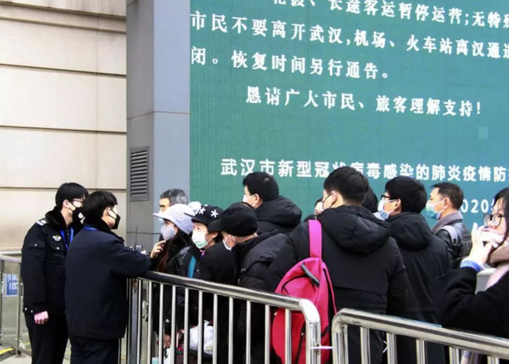

武汉“封城”首日
原文链接 备份链接 ********** *****他们很想回家，和孩子最近一次见面还是暑假。但谁也不敢回去。“万一有什么事，也不能把病毒扩散到别处，是不是？” ***** 6时35分，汉口站广场上，一队警务人员正在开会。 新京报记者 …
1月23日上午10时20分，湖北武汉汉口火车站进站口，工作人员向旅客解释离汉通道暂时关闭的情况。中青报·中青网记者 王嘉兴/摄
中青报·中青网记者 王嘉兴
1月23日凌晨2时，武汉市疫情防控指挥部发布通告，自2020年1月23日10时起，武汉全市城市公交、地铁、轮渡、长途客运暂停运营；无特殊原因，市民不要离开武汉；机场、火车站离汉通道暂时关闭。
今日上午，中青报·中青网记者探访了汉口火车站及部分超市、菜市场。
汉口火车站是武汉客流量最大的火车站，2019年春运期间，共发送旅客550万人次。自1898年建站以来，这是首次封站。
上午10时，记者在汉口火车站发现，各进站口均有车站工作人员站岗，向前往车站的旅客解释情况，只有负责清洁的工作人员和列车司机、乘务员可以出入。
一名滞留的乘客向记者展示一段上午9时30分拍摄的视频，称那时有武警和保安在现场拉起人墙。
一名工作人员向记者表示，只有持上午10点前从汉口火车站出发的列车车票的旅客才能进站。政府会协助未能进站的旅客联系原居住地街道居委会，协调滞留武汉期间的食宿问题。
记者在售票厅发现，仍有部分旅客在排队退票。汉口火车站售票处值班主任告诉记者，未取票的乘客可以在线上免费退票，但已经取票的乘客，只能在人工窗口退票。
1月23日上午，湖北武汉汉口火车站进站口，部分滞留旅客仍在观望。中青报·中青网记者 王嘉兴/摄
在汉口火车站的出租车等候处，约有50人排队等候，但鲜有出租车进入该区域。火车站出站口附近有部分黑车司机招揽乘客。记者佯装要去湖北省孝感市（距武汉80公里，驾车约90分钟，高铁30分钟，二等座价格57.5元），黑车司机告诉记者，一人的价格是500元，满4人即走。但在往年过年，一人的价格是100-200元。
据《财新》报道，汉口火车站一名管理人员表示，今日汉口火车站估计有8万客流量，约有4万人赶在封站前离开。
1月23日10时40分，湖北武汉汉口火车站进站口，车站工作人员向旅客解释情况。中青报·中青网记者 王嘉兴/摄
记者又探访了本地一家沃尔玛超市。超市入口处，有工作人员持温度测量仪测量每名顾客的体温，并要求，必须佩戴口罩才可入场。
工作人员告诉记者，超市7:30开门后，即迎来大量顾客。

1月23日11时30分，湖北武汉的一家超市中，工作人员在入口处检查顾客体温，要求顾客必须佩戴口罩。中青报·中青网记者 王嘉兴/摄
一名负责日化用品的超市导购告诉记者，顾客成箱地购买84消毒水，今日新补充的货早上8点就被抢购一空。前几日，每日补充的消毒水可以卖到下午三四点。而大概3天前，超市的酒精消毒液就已经售罄。
她称，因物流原因，公司年前已经不再安排补货。

2020年1月23日11时40分，菱角湖万达沃尔玛超市，一名顾客在选购乳制品，购物车中还有一些速冻食品。中青报·中青网记者 王嘉兴/摄
负责蔬果称重的工作人员告诉记者，上午约10时许，超市的新鲜蔬菜就已经抢购一空。
记者询问多名顾客，顾客表示价格比平常要高一些，但“是过年正常的涨价”，并未出现大幅上涨。
超市多名工作人员均表示，过年期间照常营业，没有接到放假通知。
记者还探访了汉口火车站附近的一家菜市场。周边商户告诉记者，菜市场于1月21日接到通知，从今日起关门休市。按往年情况，菜市场开放到大年三十上午。
在菜市场外，有商户用金杯车运载生鲜蔬菜进行售卖。该商户称，接到菜市场通知后，多数同行就不再进货了，他的这些蔬菜本计划卖给城内餐馆，但绝大多数餐馆今天突然不营业了。

1月23日12时，湖北武汉汉口火车站附近一菜市场门口，一商户在售卖生鲜蔬菜。中青报·中青网记者 王嘉兴/摄
多名购买了该商户蔬菜的居民告诉记者，本打算今日到菜市场购置过年所需蔬菜，无奈扑空，只能在该商户处购买。他们称，该商户的菜价“有点高”，一周前价格15元一斤的本地蔬菜泥蒿，该商户卖30元一斤；平日2.5元一斤的红菜苔，此处卖10元一斤“一捆”。
针对当前市场情况，武汉新型冠状病毒感染的肺炎防控指挥部发布第2号通告说，目前武汉市大宗商品、食品、医疗防护用品等储备充分、供应顺畅，请广大市民不用恐慌，不必囤积，以免造成不必要的浪费。紧接着发布的第3号通告称，为做好社会各界捐赠武汉市抗击疫情的医用耗材、防护用品等物资接收调配工作，现开通24小时电话接收社会各界爱心捐赠。
中国青年报客户端武汉1月23日电
中国青年报·中青在线出品
微信编辑 | 陈卓

觉得好看请点这里
原文链接 备份链接 ********** *****他们很想回家，和孩子最近一次见面还是暑假。但谁也不敢回去。“万一有什么事，也不能把病毒扩散到别处，是不是？” ***** 6时35分，汉口站广场上，一队警务人员正在开会。 新京报记者 …
原文链接 备份链接 1月22日，湖北武汉，菱角湖万达广场开门营业前，商场对工作人员逐一进行体温检测。中青报·中青网记者 李峥苨/摄 1月22日，湖北武汉，菱角湖万达广场开门营业前，商场对工作人员逐一进行体温检测。中青报·中青网记者 李峥 …
原文链接 备份链接 20190414于武昌 2020年1月23日。 农历腊月二十九。 武汉封城第一天。 一觉醒来，收到短信： “自2020年1月23日10时起，全市城市公交、地铁、轮渡、长途客运暂停运营；无特殊原因，市民不要离开武汉， …
原文链接 备份链接 作者 | 第一财经 吴绵强 周芳 陈益刊 编辑 | 张富贵 为了遏制新型冠状病毒感染的肺炎扩散，按照武汉市新型冠状病毒感染的肺炎疫情防控指挥部通告，自1月23日10时起，武汉全市城市公交、地铁、轮渡、长途客运暂停运营； …
原文链接 备份链接 文 | 王彦入 王丹妮 程静之 殷盛琳 李晓芳 周航 叶雯 曾宪雯 编辑 | 王珊 陶若谷 33岁的刘科戴上两层口罩独自走进地铁，夹杂在路人中间。像他这样拉着行李箱的人并不少见，彼此间默契地保持着距离。三天前，他刚刚从 …